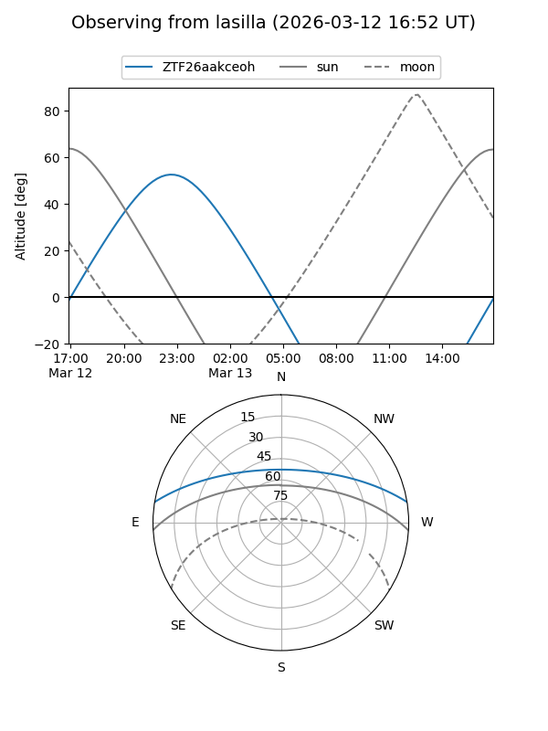
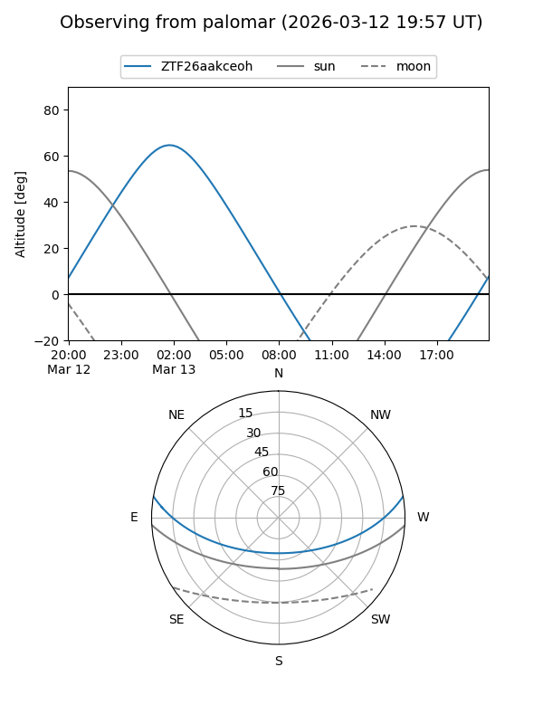

ZTF26aakceoh
Target ZTF26aakceoh at 2026-03-13 05:59
Aliases and brokers:
FINK: link
Lasair: link
ALeRCE: link
alt names
ZTF26aakceoh (ztf,fink_ztf)
Coordinates:
equatorial (ra, dec) = 79.7418,+8.05417
equatorial (HMS+DMS) = 05:18:58.02,+08:03:15.02
galactic (l, b) = (194.5867,-16.38523)
Flags:
Photometry:
last ztfg=17.02
2 ztfg detections
Lightcurve
Visibility


Additional plots